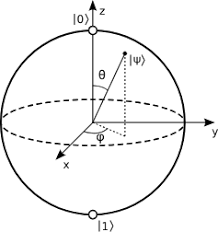

1.1: global perspectives
- QC and QI: study of information processing tasks accomplished using QM systems
1.1.1:
- classical physics were predicting absurdities -> UV catastrophe or electrons spiraling into the nucleus -> creation of QM
- QM: set of rules for construction of physical theories
- possible to use quantum effects to signal faster than light -> whether it is possible to clone an unknown quantum state (construct copy of QS) -> not possible in general with QM -> no-cloning theorem
- controlling single quantum systems -> trap single atom in atom trap, isolating from world allowing us to probe it -> explore untouched regimes in Nature
- computer science -> Church-Turing Theorem -> UTM complexly captures what it means to perform a task by algorithmic means
- quantum effects beginning to interfere in functioning of electronic devices as they are getting smaller and smaller
- failure of Moore’s Law -> move to different computing paradigm
- ordinary computer can simulate QC but not efficiently (polynomial time)
- strengthened version of Church-Turing thesis:Any algorithmic process can be simulated efficiently using a Turing machine -> for purposes of analyzing whether a given computational task can be accomplished efficiently, restrict ourselves to analysis of Turing machine model
- analog computation: analog computers can solve efficiently when Turing machines can’t -> violation? but when assumption about presence of noise in analog computers is made, their power disappears??
- unlike analog computation, QM can tolerate finite amount of noise and retain computational advantages
- first challenge: number is prime or composite using randomized algorithm -> could only determine if probably prime/composite -> perform the algorithm a few times
- ad hoc modification -> Any algorithmic process can be simulated efficiently using a probabilistic Turing machine
- Deutsch: can laws of physics be used to derive stronger version of Church-Turing thesis -> computational device capable of efficiently simulating an arbitrary physical system -> because laws of physics were QM -> quantum analogs of machines defined by Turing
- Universal Quantum Computer ?
- quantum computers may be able to efficiently solve problems that have no efficient solution on a probabilistic Turing machine
- Shor and Grover algorithms
- Feynman: essential difficulties in simulating quantum mechanics with classical computers -> build computers based on principles of quantum mechanics to avoid difficulties
- algorithm design for quantum computers is hard because . human intuition is rooted in classical world . must design an algorithm that is better than existing classical algorithm, not just QM!
- while computer science was exploding, information theory was too
- Shannon: mathematically define concept of information
- two key questions about communication of information:
- what resources are required to send information over communications channel?
- can information be transmitted in a way that is protected against noise in communications channel
- two fundamental theories:
- noiseless channel coding theorem: quantifies physical resources required to store the output from information source
- noisy channel coding theorem: quantifies how much information it is possible to reliably transmit through noisy communications channel -> upper limit on protection afforded by error-correcting codes
- two key questions about communication of information:
- to achieve reliable transmission in presence of noise: error-correcting codes
- quantum information theory:
- Schumacher: quantum bit/qubit has tangible physical resource (analogue to noiseless coding theorem)
- but no analogue to noisy channel coding theorem
- theory of quantum error-correction has been developed: allows QC to compute efficiently in presence of noise and allow communication over noisy quantum channels
- CSS (Calderbank, Shor, Steane) codes and stabilizer codes (Calderbank, Rains, Shor, Sloane)
- quantum error-correcting codes: protect quantum states against noise - transmitting ordinary classical information using quantum channel?
- Bennett/Wiesner: transmit two classical bits of information while only transmitting one quantum bit -> superdense coding
- distributed QC: QC require exponentially less communication to solve certain problems
- study of information theory: properties of single communications channel
- in applications: networks of many channels -> networked information theory: information carrying properties of networks of communication channels -> very developed
- networked quantum information theory, still in infancy, no unifying theory of networked information theory exists for quantum channels
- cryptography: communication and computation between two paries who may not trust each other
- private key cryptosystems: A and B communicate by sharing a private key (only they know)
- problems: how to distribute the keys?
- QM can be used to distrbute keys such that A and B’s security is not compromised -> quantum cryptography -> observation disturbs the system being observed -> an observer would be visible as disturbance of communications channel
- public key cryptosystems: B publishes a key available to the general public, A can use this key to encrypt a message but a third party cannot use the public key to decrypt the message. B has secret key matched to the public key.
- solve problem of key distribution
- RSA cryptosystem -> most widely deployed key cryptosystem
- difficult to invert encryption stage if only public key available -> belief that this cannot be solved on classical computer (factoring), but it can be solved on QC!
- private key cryptosystems: A and B communicate by sharing a private key (only they know)
- quantum entanglement: uniquely QM resource
1.1.2: future
- think physically about computation
- any physical theory -> basis for theory of information processing and communication
- think computationally about physics -> physics about understanding elementary objects/simple systems, interesting things happen when things are larger and more complicated (chemistry and engineering, ad hoc fashion)
- computation and algorithms as systematic means of constructing and understanding (small and relatively complex) systems
1.2: quantum bits
- mathematical objects with certain specific properties
- abstract entity: construct a general theory of QC/QI that doesn’t depend on specific system
- qubit can be |0⟩, |1⟩ or a linear combination of states |ψ⟩=α|0⟩ + β|1⟩ (superposition)
- vector in 2D space
- computational basis states: |0⟩, |1⟩ -> form orthoormal basis for this vector space
- we cannot examine a qubit to determine it’s quantum state
- qubit’s state is unit vector in 2D complex vector space
- lack of direct correspondence between elements of abstraction and real world with qubits -> there is indirect correspondence for qubit states to be manipulated and transformed to lead to measurement outcomes -> these quantum states have real, experimentally verifiable consequences.
- exist in continuum of states until it is observed
- because |α|2 + |β|2 = 1 we can say: |ψ⟩ = eiγ(cos(θ/2)+eiϕsin(θ/2))
- θ and ϕ define a point on unit three-dimensional sphere (Bloch sphere)
- Bloch sphere can be used to describe single qubits

- how much information represented by a qubit -> infinite number of points on unit sphere so infinite binary expansion of θ
- not true: measurement changes the state of qubit, collasping the superposition
- only 0 or 1, so measurement only returns one state
- not true: measurement changes the state of qubit, collasping the superposition
- would need to measure infinite number of qubits to determine α and β
- how much information is represented by a qubit if we do not measure it? -> potential amount of “hidden information” grows exponentially with more qubits
1.2.1: multiple qubits
- two qubits have four computational basis states: |ψ⟩=α00|00⟩ + α01|01⟩+α10|10⟩ + α11|11⟩
- {0, 1}2: set of strings of length 2 with each letter either one or zero
- measuring the first qubit as 0 gives probability |α00|2 + |α01|2 and post-measurement state: $$|\psi ' \rangle = \frac{(\alpha_{00} | 00 \rangle + \alpha_{01} | 01 \rangle)} {\sqrt{|\alpha_{00}|^2 + |\alpha_{01}|^2)}}$$
- important two qubit state, Bell state or EPR pair: $$\frac{|00\rangle + |11 \rangle}{\sqrt{2}}$$
- key ingredient in quantum teleportation and superdense coding